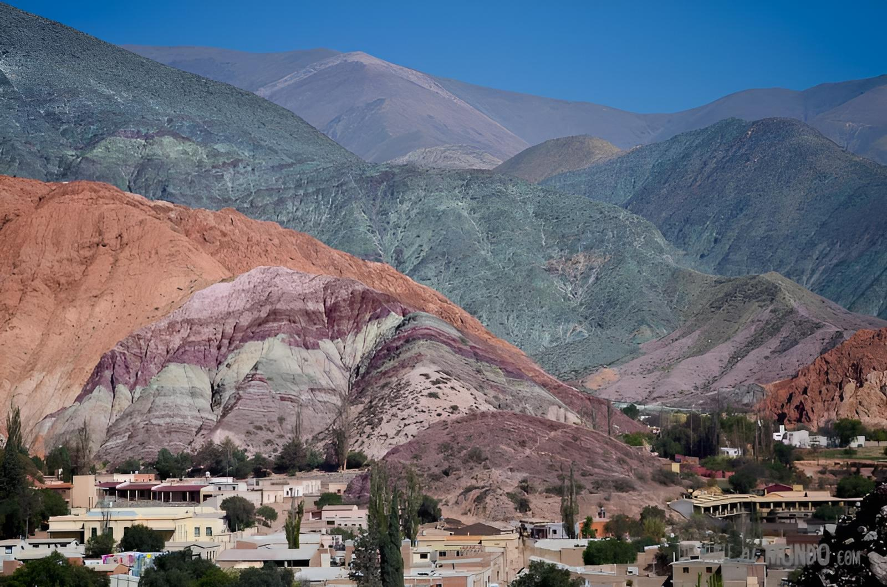

Purmamarca, el pueblo del Cerro de los Siete Colores
Un rincón mágico en Jujuy donde el paisaje parece pintado a mano.
Llegar a Purmamarca es como entrar en un cuadro. Las montañas que rodean el pueblo cambian de color según la hora del día, y el famoso Cerro de los Siete Colores parece una paleta de pintura gigante. No hay forma de no quedarse mirando en silencio, tratando de entender cómo algo tan perfecto puede ser natural.
El pueblo en sí es pequeño, pero tiene un encanto especial. Las calles son de tierra, las casas están hechas de adobe, y en la plaza central se arma una feria donde los artesanos venden tejidos, joyas de alpaca y recuerdos hechos a mano. Todo tiene ese aire tranquilo del norte, donde nadie parece tener apuro.
Uno de los mejores momentos del día es el amanecer. Si te levantás temprano y subís al mirador, vas a ver cómo el sol ilumina el cerro y los colores empiezan a brillar: rojos, verdes, violetas, amarillos… es un espectáculo que no se olvida.
Además, Purmamarca es el punto de partida perfecto para recorrer otros lugares increíbles de la Quebrada de Humahuaca, como Tilcara, Humahuaca y las Salinas Grandes. Cada uno tiene su propia magia, pero Purmamarca tiene algo distinto, una calma que te atrapa y te hace querer quedarte un día más.
Antes de irte, probá una empanada jujeña o un locro bien norteño en alguno de los restaurantes del pueblo. Nada mejor que cerrar el día con buena comida y música folklórica sonando de fondo.
← Volver a Categorías